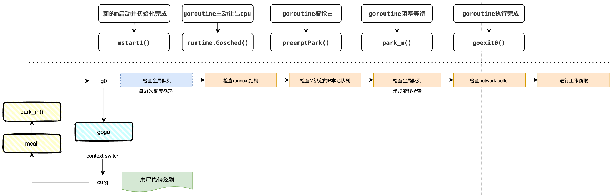

📄 本文共 1634 字，预计阅读 4 分钟
00. GMP 模型总览
Abstract
Go 语言调度器（Scheduler）通过 GMP 模型实现了高效的用户态线程调度。本文从go调度模型的演进着手，逐步分析前期gm模型面临的问题及痛点，gmp模型做了哪些改进、这些改进带来了什么优势等。
Keywords: Go Runtime, Scheduler, GMP, GM
1. 引言
go 引入 goroutine 的核心动力是为了解决c10k/c100k问题。传统的并发模型往往依赖于操作系统内核线程（OS Thread），但这种 1:1 的模型在高并发场景下面临显著的瓶颈：
- 内存开销大： 线程栈通常固定在 1MB-8MB，若创建 10,000 个线程，内存占用将达到 GB 级别。1
- 上下文切换慢： 线程调度由内核完成，涉及用户态与内核态的切换，开销通常在微秒级。
- 调度语义： 内核调度器无法感知特定编程语言层面的语义（如 IO 密集型还是计算密集型），难以做出针对性优化。
为了解决上述问题，Go 设计了用户态线程——goroutine：
- 动态栈管理： 初始栈仅为 2KB2，并支持动态伸缩，单进程可轻松支撑数百万 goroutine。
- 廉价上下文切换： 切换完全在用户态进行，只需保存 PC、SP、DX 等少量寄存器，成本低至纳秒级。
- 同步编程，异步执行： 配合 runtime 的 netpoller，开发者可以使用同步阻塞的编程风格，底层自动转化为非阻塞异步 I/O，大幅降低心智负担。
2. 调度器架构演进
2.1 早期架构：GM 模型 (Go 1.0)
Go 1.0 采用朴素的 M:N 调度模型，称为 GM 模型。它主要包含两个实体：
- G (goroutine)： 并发任务单元。
- M (machine)： 操作系统内核线程，执行实体。
核心缺陷:
所有的 G 都维护在一个单一的全局运行队列 中。M 获取任务必须竞争一把全局锁。随着 CPU 核心数增加，锁竞争极其激烈，导致性能急剧下降。GM模型示意如图1所示。
 图 1: GM 模型架构
图 1: GM 模型架构
2.2 当前架构：GMP 模型 (Go 1.1+)
Dmitry Vyukov 引入了第三个实体 P (Processor)，重构了调度链路。3
- P (Processor)： 逻辑处理器，代表执行 Go 代码所需的资源上下文。
GMP 模型实体关系：
- M 必须绑定 P 才能执行 G。
- P 拥有本地队列，实现了无锁访问。
 图 2: GMP 模型架构：本地队列与 Syscall 分离机制
图 2: GMP 模型架构：本地队列与 Syscall 分离机制
P 的引入解决了两大核心问题：
- 消除全局锁瓶颈： 每个 P 维护一个本地运行队列。M 优先消费本地队列，无需加锁，大幅提升了并行度。
- 资源解耦与复用： P 持有 mcache 等内存资源。当 M 因系统调用（Syscall）阻塞时，P 会与 M 分离（Handoff），携带资源寻找新的 M 继续执行其他 G，避免了计算资源的浪费。
3. 核心调度机制
GMP 的核心不仅在于结构变化，更在于一套复杂的调度算法，旨在实现高吞吐、低延迟与公平性的平衡。
3.1 调度循环
M 在持有 P 的情况下，通过 findrunnable 函数执行调度循环4。根据最新的 Runtime 逻辑，查找 G 的优先级顺序如下（结合图 3）：
- 周期性检查全局队列： 为了防止全局队列饥饿，每 61 次调度循环，强制优先检查一次全局队列。
- 检查
runnext结构： 检查 P 的高优先级单槽位。 - 检查本地队列： 检查 P 的本地队列（无锁，最快路径）。
- 常规检查本地队列： 如果本地为空，常规检查全局队列。
- 检查 Network Poller： 检查是否有 I/O 就绪的 G。
- Work Stealing： 尝试从其他 P 的本地队列窃取任务。  图 3: 调度器核心状态流转与优先级检查流程
{kind=link}
3.2 关键调度策略
3.2.1 局部性优化：runnext
这是一种“插队”机制。当 G1 唤醒 G2 时（如 Channel 通信），G2 会被直接放入 G1 所在 P 的 runnext 槽位。
- 收益： 继承了时间片，极大提升了 L1/L2 Cache 的命中率，适合 Pipeline 模式。
- 代价： 破坏了 FIFO 公平性，可能导致老任务饥饿（通过 61 次全局检查机制兜底）。
3.2.2 负载均衡：工作窃取
为了解决分布式队列导致的“忙闲不均”问题，当 P 本地无任务时，会主动窃取其他 P 本地队列后半部分的任务。
- 设计哲学： 在局部性（Locality）与 CPU 利用率之间，优先保证 CPU 不空转。空转的代价远高于 Cache Miss。
3.2.3 饥饿预防：61 次强制检查
调度器每经过 61 次循环（schedtick），会强制访问全局队列。
- 目的： 打破
runnext和本地队列的垄断，保证全局队列中的 G 最终能被执行。 - 溢出兜底： 全局队列还充当了溢出缓冲区，当 P 本地队列满（256 slots）5时，部分 G 会被批量转移至全局队列。
3.2.4 抢占机制
为了防止死循环或长时间运行的 G 占用 M，Sysmon 监控线程会发起抢占（阈值均为 10ms）6：
- 协作式抢占： 编译器在函数入口插入检查指令（stack guard）。当 G 调用函数时触发栈扩张逻辑，从而主动让出 CPU。
- 异步抢占 (Go 1.14+)： 针对没有函数调用的密集计算循环，Sysmon 发送
SIGURG信号，通过信号处理函数强行中断并保存上下文。
3.2.5 自旋与 Netpoller
- Netpoller 非阻塞： 当 G 进行网络 I/O 时，G 进入 Netpoller 等待，M 不会阻塞，而是立即执行下一个 G。
- 自旋线程 (Spinning Thread)： 为了降低 M 唤醒的系统调用开销，闲置的 M 不会立即休眠，而是自旋（消耗少量 CPU）积极寻找任务。这是用 CPU 换取低延迟的典型权衡。
4. 总结
GMP 模型是 Go 高并发能力的基石。它通过 Runnext 极致利用局部性，通过 Work Stealing 保证负载均衡，通过 Preemption 确保调度公平，并利用 Syscall Handoff 和 Netpoller 实现了对操作系统线程的高效复用。